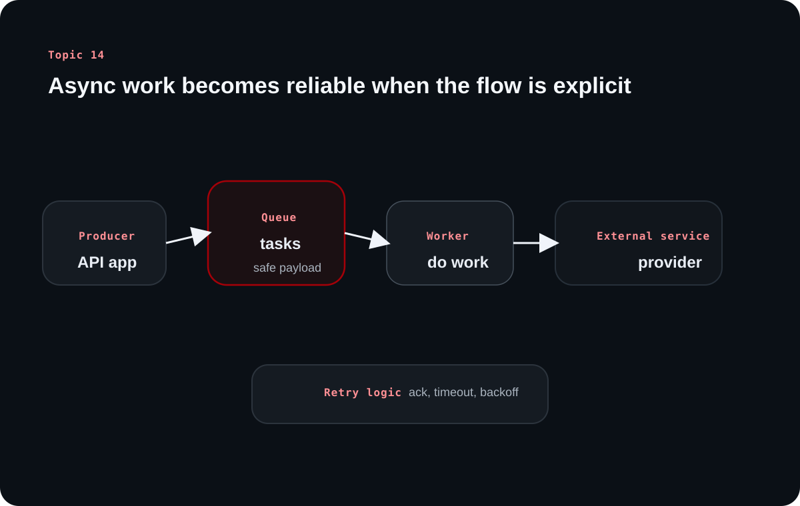

Topic 14 explains why backends move some work out of the request-response path. It turns background jobs from scattered buzzwords into a coherent model of responsiveness, reliability, and scalable asynchronous execution.
The source's main lesson is decoupling. A user-facing request should finish quickly, while slower or failure-prone work can continue through a queue, worker, and retry system that does not block the client.
Chapter 1
Background jobs exist because not every task belongs inside the client wait time
The source begins with the definition and a familiar signup example because the motivation is easier to understand than the mechanics.
A background job runs outside the request-response lifecycle
The source defines background work as code that executes asynchronously rather than inside the immediate request-response path. It is meant for operations that are useful but do not need to finish before the client gets an answer.
That distinction improves responsiveness because slow or failure-prone steps no longer block the main API response.
Verification email is the classic example because it shows both latency and failure risk
After a user signs up, the backend still needs to validate input and create the account synchronously. But sending the verification email can involve external services, timeouts, retries, and provider-side failures that should not hold the signup response hostage.
By offloading email delivery to background processing, the API can return success promptly while the email task continues with its own retry and failure-handling rules.
Chapter 2
Producer, broker, and worker form the core queue architecture
Once the motivation is clear, the source lays out the queue pipeline in simple roles.
The application creates tasks, the queue stores them, and the worker executes them
A producer serializes task data and enqueues it. The broker or queue stores that payload until a worker is ready. The worker then dequeues, deserializes, and runs the handler code that performs the actual background action.
This split matters because it decouples when a task is requested from when the task is completed. The system becomes less fragile than a direct in-request execution path.
Learning diagram

A task queue protects the user-facing request by separating task creation, durable storage, and eventual worker execution.
Acknowledgments, visibility timeout, and retries keep work from being lost
The source explains that workers acknowledge success back to the queue. If that acknowledgment never arrives because the worker crashes or the task fails, the queue can make the task visible again for retry.
Visibility timeout and exponential backoff exist for exactly this reason: they prevent task loss while also preventing tight retry loops that would amplify failure instead of absorbing it.
Chapter 3
Different task shapes exist because background work is not all the same
The source names several common patterns so teams can think in workflows rather than only in single jobs.
One-off, recurring, chain, and batch tasks solve different scheduling problems
One-off tasks fire from a single event, such as a verification email or password reset. Recurring tasks run on a schedule, such as daily reports or cleanup jobs. Chain tasks represent dependent workflows, and batch tasks fan work out across many subtasks.
These categories matter because reliability concerns change with the workload. A scheduled cleanup job, for example, needs different safeguards than a user-triggered email send.
A video-processing pipeline shows why chaining matters
The source's learning-management example is helpful: upload a video, encode it, then generate a thumbnail, then maybe transcribe it. Those steps do not all happen at once, and some depend on the previous step finishing first.
A queue-backed chain turns that dependency graph into manageable units instead of one giant fragile background task.
Chapter 4
Idempotency, observability, and small task design make background systems dependable
The source moves from architecture to discipline because background systems become hard to trust without operational guardrails.
A retryable task must be safe to run more than once
Idempotency is central because retries are normal in async systems. If a worker crashes after partially completing a task, the rerun should not duplicate destructive side effects or produce inconsistent state.
The source pairs this with logging and monitoring because teams need visibility into queue length, failure rates, retries, and worker health before background issues become user-visible incidents.
Small focused tasks scale better than giant multi-purpose jobs
The source recommends keeping tasks small, rate-limiting external calls where needed, and scaling workers horizontally as workload grows. Long-running jobs should be broken into smaller steps when possible to make retries cheaper and progress easier to reason about.
This is one of the most important design instincts for first-time learners: complexity usually hides in oversized tasks rather than in the queue abstraction itself.
Chapter 5
Background jobs support many everyday SaaS workflows
The final sections become concrete again by naming the operations that commonly leave the request-response path.
Email, media processing, reports, notifications, and deletion workflows all benefit from queues
The source lists sending emails, image and video processing, scheduled reports, push notifications, and large account-deletion flows as common uses. Each one either depends on outside services, takes too long to finish inline, or affects too much data to handle comfortably inside a single synchronous request.
Queue-backed processing improves user experience because the frontend gets a fast answer while the durable workflow continues behind the scenes.
Use case
Why it belongs in the background
Verification email
External provider latency should not block signup
Media processing
Encoding and resizing are expensive and multi-step
Reports
Generation is slow and often scheduled
Push notifications
Depends on external platforms and delivery variance
Account deletion
May touch many shards or tables
Overall takeaway
What to remember
Background jobs are not a side feature. They are the system that lets a backend stay responsive while still completing slow, failure-prone, or high-volume work through queues, workers, retries, and careful task design.